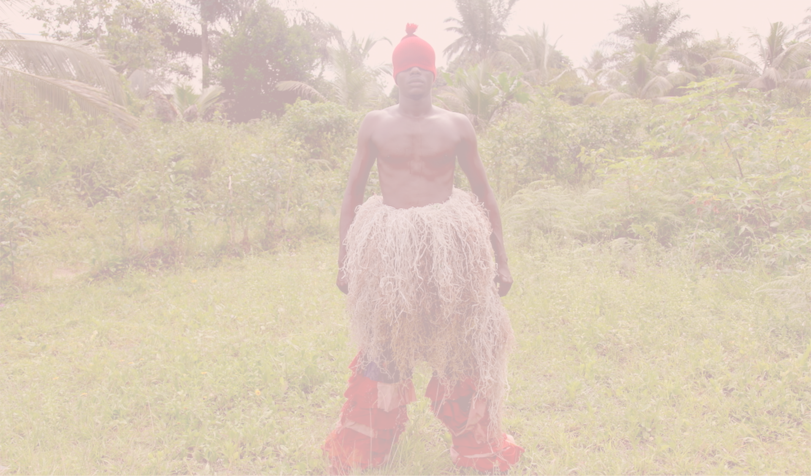
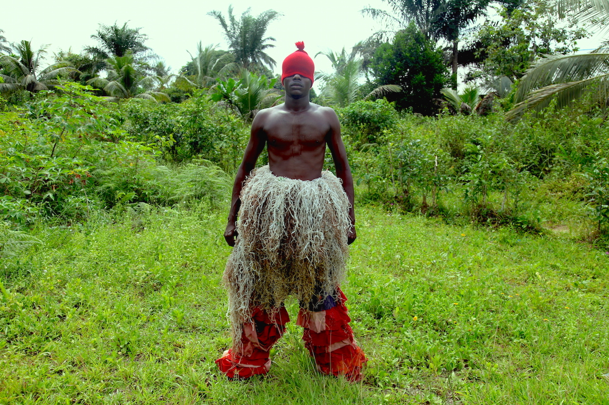
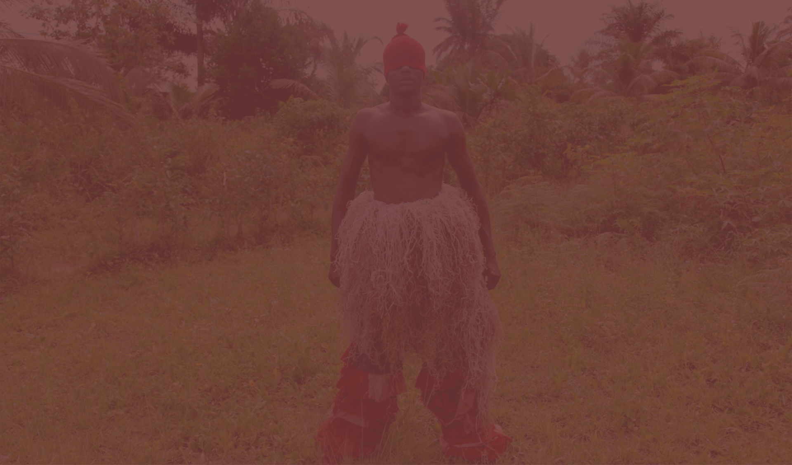

Karikpo: Holy Star Boyz is a continuation of Zina Saro-Wiwa’s exploration into the world of masquerade in the Niger Delta, specifically the antelope-inspired Karikpo masquerade that is unique to the Ogoni people. In this series, Saro-Wiwa has reinvented the mask and used them as motifs to explore a range of personal emotions and socio-political questions.
Her first work Karikpo Pipeline – a five-channel video – transposed the boyish, athletic and acrobatic performance of the masquerade onto remnants of the oil industry dotted around the Ogoniland landscape. This new series of lightbox works express the ways the industry has impacted and transformed social performances and is a meditation on hybridity, alienation, education and diaspora.
Although the masks themselves are cast from an actual traditional karikpo mask, these new breeds are made of a petroleum-based resin. And whilst they appear translucent they are far heavier than their wooden predecessor and do not allow for the acrobatic performance that is traditional for Karikpo dancers. The color of the masks reference the colors worn by industrial labourers and penal dwellers in the Niger Delta and around the world.
“The Holy Star Boyz are a new breed. From another place that is still being invented, they are hybrid forms of existence that cannot truly belong. Born to perform yet they cannot behave as their original mother would have them behave. They are made of new material.”
The Invisible Man (2015) sculpture and photo series
The Invisible Man is a neo-Ogoni mask created by Zina Saro-Wiwa. Inspired by the newer “Ogele style” masquerade masks that have started appearing in Ogoniland in the late 1980s, the mask is one that depicts the men that have disappeared in Zina’s life through death or through their own design. Brother, father, lovers and illusive Ogele dancers feature on the Janus-faced mask. The black and white face representing the sadness of loss, the lined pink face the anger associated with abandonment. Worn by women only.
Men of the Ogele: “Invisible Boy” (2014)
Men of the Ogele is a photographic series by Zina Saro-Wiwa taken in Ogoniland. Located in Nigeria’s Niger Delta region, an hour or so East of the city of Port Harcourt, Ogoniland is a rural area consisting of six kingdoms and 111 villages. Like many parts of rural Africa, it has it own masquerading culture. Most masquerades were created far in the past before anyone can remember when or how they emerged. Traditionally tied to farming cycles, a masked performer would perform for audiences surrounded by drummers and flautists at specific times of the year like yam harvest or New Year.
Masquerades existed and still exist to augur good luck for planting seasons, for entertainment and also as a form of social control. But in the 1980s and 1990s a new form of masquerade emerged in Ogoniland. Inspired by the political situation in Ogoni and the Niger Delta, a growing Ogoni consciousness spawned a masquerade called “Gbaaloo” which means “United” in Ogoni language. But the phenomenon is nicknamed “Ogele”.
Ogele groups were formed by young men and these masquerades featured large, tall, very heavy masks made of wood that were often painted with car paint that are markedly distinct from the face masks of previous generations. These tiered masks tell stories that reflect the political and sometimes psychological situation of the time they were created. The mystical permeates Ogele as the young men have a practise of disappearing into the forests for up to three years to “dream” the design of the masquerades masks and the accompanying songs and dances.
Ogele groups are comprised of at least six men. There is the dancer who dresses in a colourful oversized bodysuit made from found materials and scraps as well as the heavy mask and then there are the musicians. As a group they move around villages of Ogoni or are hired for special occasions and political rallies. Though these men move in a group, Saro-Wiwa’s images often focus down on individual members, deconstructing the phenomenon both physically and emotionally.
A difficult network of organizations to track, the men of the Ogele have never been photographed before. Playful, passionate and vulnerable, Saro-Wiwa’s images upend the usual presentation of African masquerade and gently dismantle the notion of ‘African tradition’. They suggest an emotional and living relationship between the mask, the mask wearer and the performance, breathing humanity into the interrogation of such African cultures. The unmasking of these secret societies gives us a rare glimpse into the hearts of minds of Ogoni men and challenge the highly politicised reading of Ogoni and Niger Delta life.

Works from Men of the Ogele have been acquired by Krannert Museum in Illinois, Wheaton College in Norton, Massachussets and private collectors in the US and the UK.